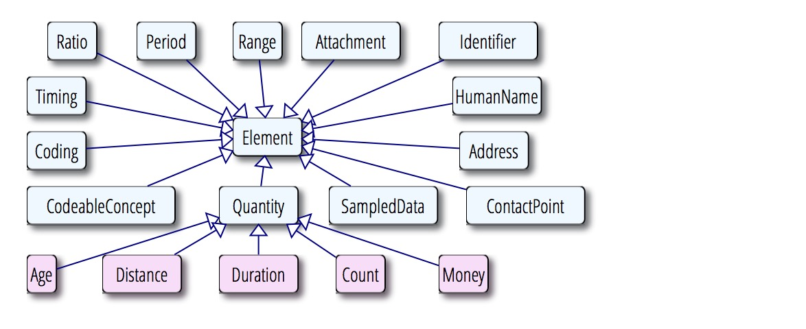
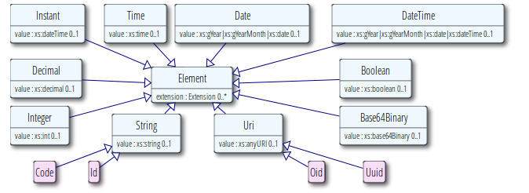
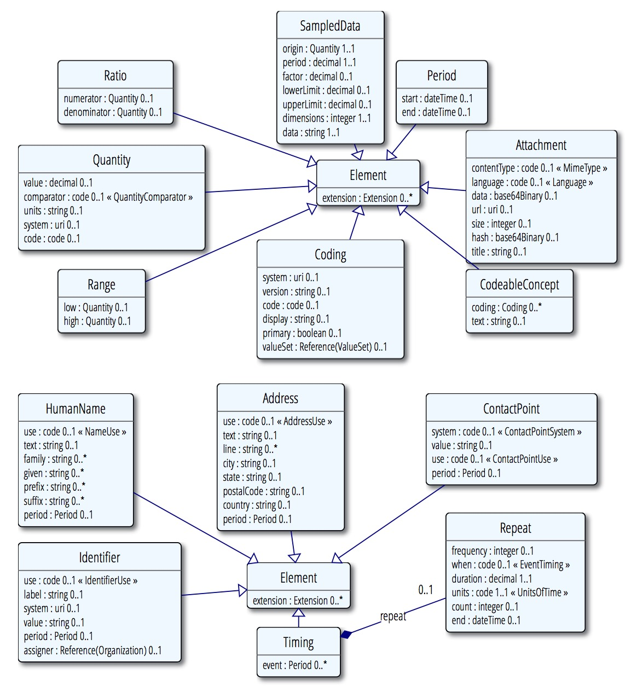
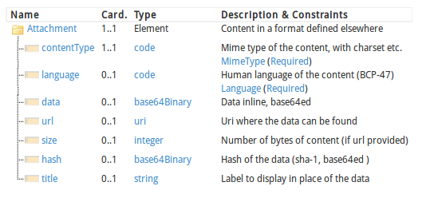

本页内容:
1.13.0 数据类型
FHIR标准为资源中的数据元素定义了一系列的数据类型.数据类型分两大类:从XML Schema导入的简单/基础数据类型,和复杂数据类型,主要是可复用的元素集合.这部门介绍数据类型.参考 数据类型实例, 数据类型正规定义 和 数据类型的对应关系.

这些数据类型可以在 W3C Schema找到.
1.13.0.1 基本数据类型

下表中对标准中所用到的基本数据类型和对它们的约束进行了总结, 它们也可以有扩展.基本数据类型的value属性和 W3C Schema (1.0) 标准 第二部分中定义的值域相同,尽管大多数情况下,以加粗的字体来表示该标准所规定的额外约束.
| 基本数据类型 | ||
| FHIR中的名称 | Schema中的类型 | 定义 |
|---|---|---|
| boolean | xs:boolean | 值要么是true要么是flase (0和1是无效值) |
| integer | xs:int | 有符号的32位整数(更大的值 选用decimal) |
| decimal | xs:decimal | 随机数.实际中不要选用IEEE的浮点数类型,选用内置精度的真正的decimal(如JAVA中的BigDecimal).Decimals may not use exponents |
| base64Binary | xs:base64Binary | base64 编码的字节流 (RFC 4648) |
| instant | xs:dateTime | 某个时间点- 至少要知道秒,总是包括时区. 注意: 这个类型适合系统时间,不适合人的时间 (参考date和dateTime). |
| string | xs:string | 一个Unicode字符序列 字符串大小不应该超过 1MB |
| uri | xs:anyURI | 唯一的资源标识符引用,可以是绝对或相对引用,可能会包含可选的标识符片段(RFC 3986) |
| date | xs:date, xs:gYearMonth, xs:gYear的组合 | 人们交流时用到的日期或者日期的一部分(如只是年份或者年份加上月份) 不包含时区 . Dates值应该是有效值,date是w3c schema 中 date, gYearMonth, and gYear的组合 正则表达式为: -?[0-9]{4}(-(0[1-9]|1[0-2])(-(0[0-9]|[1-2][0-9]|3[0-1]))?)? |
| dateTime | xs:dateTime, xs:date, xs:gYearMonth, xs:gYear的组合 | 人们交流时用到的日期,日期-时间或者部分日期(如只是年份或者年份加上月份) 如果指定了小时和分钟,应该要有时区值.可以有秒 也可以没有.日期值应该是有效值. . "24:00" 形式的时间是不允许的 dateTime是W3C schema中 dateTime, date, gYearMonth, gYear数据类型的组合. regex: -?[0-9]{4}(-(0[1-9]|1[0-2])(-(0[0-9]|[1-2][0-9]|3[0-1])(T([01][0-9]|2[0-3]):[0-5][0-9]:[0-5]0-9?(Z|(+|-)((0[0-9]|1[0-3]):[0-5][0-9]|14:00))?)?)?)? |
| time | xs:time | 某天内的某个时间点没 但没有规定是哪天. (可以转换成午夜之后的 Duration 可以有秒,也可以没有. 不允许"24:00"形式的时间,不允许时区的出现 regex: ([01][0-9]|2[0-3]):[0-5][0-9]:[0-5]0-9? |
| 注意:并非对于date/time数据类型的所有约束都可以用正则表达式来表示,因此其实这些正则表达式的取值要比真正的有效值范围要广一些 | ||
| 简单约束 | ||
| FHIR 中的名称 | 基本的FHIR数据类型 | 描述 |
| code | string | 表示取值来自其他地方所定义的可控的字符串集合 (更多信息请参考 编码的使用 ). 技术上来讲,code是至少包含一个字符的字符串,前后都没有空格, and where there is no whitespace other than single spaces in the contents 正则表达式: [^\s]+([\s]+[^\s]+)* |
| oid | uri | 用URI(RFC 3001)来表示OID: urn:oid:1.2.3.4.5 |
| uuid | uri | 用URI(RFC 4122)来表示UUID: urn:uuid:a5afddf4-e880-459b-876e-e4591b0acc11. 注意 RFC 批注中要求说UUID的值必须是小写的,系统可以根据情况来处理 |
| id | string | 范围在 0 to 2^64-1 之间的数字(可以是十六进制的), uuid, oid, 或任意小写字母的组合, 数字, "-" 和 ".", 长度限制为36位.正则表达式为: [a-z0-9-.]{1,36} |
除了上述的值以外,这些基本数据类型也可以有标识(如xml:id),也可能和资源中的其他元素一样会有扩展 注意 value字段是可选的,可以不存在,这里遵循所有元素的标准规则.
比如,基本数据类型的元素可能没有valu字段,取而代之的会存在一个 数据缺失原因的扩展data-absent-reason extension .
在XML中,这些数据类型表示成XML元素,在value属性中用数据类型的值来表示.元素的名称用数据类型来定义.XML元素可能会有一个 id 属性, 和"extension"子元素. 按照XML schema,会忽略数据类型boolean, integer, decimal, base64Binary, instant, uri, date, dateTime, oid, and uri的值中包含的前置和后置的空格.注意这意味着对于XML实例而言,schema aware 和non schema aware 的XML库会存在不同的属性值.鉴于此,这些数据类型的valuse属性的值不应该包含前置或后置的空格.String 的值只有在前置或后置空格本身是值的一部分时才能存在.
在 JSON中,这些类型用包含它们的对象的简单属性来表示.属性的名称用数据类型来定义.数据类型也会有id属性和extension.在JSON format中描述了如何表示.JSON中空格总是很重要的.除了string之外的基本数据类型不应该包含前置或后置空格.
1.13.0.2 复杂数据类型
这些数据类型用包含子元素的XML元素来表示,子元素的名称用基本数据类型来定义.
任意XML元素都可能有 id attribute. JSON中,这些数据类型是用对象来表示的,属性的名称和XML元素的名称一样.JSON表达格式几乎是一样的,因此只有第一个例子 给出了JSON的表达格式.
复杂数据类型可以用 "被规范". 规范中是对元素应该取什么值,哪些元素应该取值的约束.
复杂数据类型的UML图

1.13.0.3 Attachment
该数据类型针对的是包含或引用附件的情况-一些用其他格式定义的数据内容.最常用的情况是包含图片或诸如PDF等格式的报告.然而可以用来表示任何拥有MIME类型的数据.
|
|

1.13.0.3.1 术语绑定
| 路径 | 定义 | 数据类型 | 参考 |
|---|---|---|---|
| Attachment.contentType | attachment的 mime类型 | Incomplete | BCP 13 (RFCs 2045, 2046, 2047, 4288, 4289 and 2049) |
| Attachment.language | 人类使用的语言 | Incomplete | IETF language tag |
contentType 元素总是应赋值.它包含了编码信息和其他的一些mime类型的扩展.如果其中没有编码信息,也就是说没有定义正确的操作,尽管一些mime类型 可能会定义默认的编码集或者可以通过对内容的解读来确定正确的编码集.
Attachment的实际内容是用data 元素或者URL引用来提供的.如果两者皆有的话,URL指向的内容应该和data中的内容一样,决不能指向和data中不同的内容(比方说,reference是存在版本的). URL的reference应该指向一个地址,该地址可以获取实际的数据,一些URI诸如cid能够满足这样的要求.如果URL是一个相对引用的话,应该用和 resource reference一样的方式来解读.
包含了 hash,这样系统就可以确认URL所返回的内容未经修改.
在很多使用Attachment的情况下,基数设为1.正确的使用重复次数可以在不同的mime类型和语言中传递同样的内容.应该在资源中可重复元素/引用该类型的扩展定义中提供对重复元素含义的指导意见
描述attachment中所使用语言的language元素取值使用 BCP 47中定义的编码.
约束
如果data URL都不存在的话,应当理解成对于所声明的原因 ,没有特定mime类型和或语言的内容.
在使用的场景中可以常常会对能够使用的attachment的类型作出规定(也就是mime的类型).
在这些地方会用到Attachment: Media, Practitioner, SecurityPrincipal, DiagnosticReport, Observation, RelatedPerson and Patient
1.13.0.4 Coding
See also Examples, Formal Definitions and Mappings.
A Coding is a representation of a defined concept using a symbol from a defined "code system"
- see Using Codes in resources for more details.
<[**[name]**](datatypes-definitions.html#Coding "A reference to a code defined by a terminology system.") xmlns="http://hl7.org/fhir"> [](formats.html "Documentation for this format") <!-- from Element: [extension](extensibility.html) --> <[**system**](datatypes-definitions.html#Coding.system "The identification of the code system that defines the meaning of the symbol in the code.") value="[[uri](datatypes.html#uri)]"/><!-- **0..1** Identity of the terminology system --> <[**version**](datatypes-definitions.html#Coding.version "The version of the code system which was used when choosing this code. Note that a well-maintained code system does not need the version reported, because the meaning of codes is consistent across versions. However this cannot consistently be assured. and When the meaning is not guaranteed to be consistent, the version SHOULD be exchanged.") value="[[string](datatypes.html#string)]"/><!-- **0..1** Version of the system - if relevant --> <[**code**](datatypes-definitions.html#Coding.code "A symbol in syntax defined by the system. The symbol may be a predefined code or an expression in a syntax defined by the coding system (e.g. post-coordination).") value="[[code](datatypes.html#code)]"/><!-- **0..1** Symbol in syntax defined by the system --> <[**display**](datatypes-definitions.html#Coding.display "A representation of the meaning of the code in the system, following the rules of the system.") value="[[string](datatypes.html#string)]"/><!-- **0..1** Representation defined by the system --> <[**primary**](datatypes-definitions.html#Coding.primary "Indicates that this code was chosen by a user directly - i.e. off a pick list of available items (codes or displays).") value="[[boolean](datatypes.html#boolean)]"/><!-- **0..1** If this code was chosen directly by the user --> <[**valueSet**](datatypes-definitions.html#Coding.valueSet "The set of possible coded values this coding was chosen from or constrained by.")><!-- **0..1** [Resource](references.html#Resource)([ValueSet](valueset.html#ValueSet)) Set this coding was chosen from --></valueSet> </[name]>
| Name | Card. | Type | Description & Constraints |
|---|---|---|---|
| 1..1 | Element | A reference to a code defined by a terminology system If a valueSet is provided, a system URI Is required | |
 | 0..1 | uri | Identity of the terminology system |
| 0..1 | string | Version of the system - if relevant |
| 0..1 | code | Symbol in syntax defined by the system |
| 0..1 | string | Representation defined by the system |
| 0..1 | boolean | If this code was chosen directly by the user |
 | 0..1 | ValueSet | Set this coding was chosen from |
The meaning of the Coding is defined by the code. The system provides
the source of the definition of the code, along with an optional version reference.
The display is a human display for the text defined by the system - it adds no other
value. The Value Set reference provides context information about the selection of the
code.
The system is a URI that references the code system that defines the code.
The URI may be:
a URI defined in the the named systems list an OID (urn:oid:) or a UUID (urn:uuid:). OIDs and UUIDs may be registered in the HL7 OID registry
a URL that references a definition of the system directly, which may be a reference to a code system defined as part of ValueSet resource (i.e. the value in ValueSet.define.system) or any other URI that uniquely identifies the code system definition
The correct value to use in the system for a given code system can be determined by working through the following list, in order:
the Named Systems List section the HL7 OID Registry
the documentation associated with the code system consulting the owner of the code system
asking on the HL7 vocabulary mailing list
A code system version may also be supplied. If the meaning of codes within the code system is consistent across releases, this is not required.
The version SHOULD be exchanged when this the system does not maintain consistent definitions across versions.
If a value set is referenced, and the value set defines the code system, and the code system definition specifies a version, the version SHALL be the same as in the value set.
Note that the following systems SHOULD always have a version specified: LOINC
Various versions of ICD National releases of SNOMED CT (consistency of definitions varies amongst jurisdications, and some jurisdictions may make their own rules on this)
See the discussion of code system versions in the Value Set resource for further discussion on versioning.
If present, the code SHALL be a syntactically correct symbol as defined by the system.
In some code systems such as SNOMED CT, the symbol may be an expression composed of other predefined symbol (e.g. post-coordination).
Note that codes are case sensitive unless specified otherwise by the code system. The display
is a text representation of the code defined by the system and is used to display
the meaning of the code by an application that is not aware of the system.
Where the code system defines multiple possible display strings, one of these SHALL be used in display.
If one is labelled as preferred, it SHOULD be used. If the code system does not define a text representation
(e.g. SNOMED CT Expressions) then display cannot be populated, and the meaning of the code won’t be
accessible to systems that don’t understand the code expression.
In some cases, the system may not be known - only the code is known.
In this case, no useful processing of the code may be performed unless
the system can be safely inferred by the context.
This practice should be avoided where possible, as
information sharing in a wider context is very likely to arise eventually, and codes cannot
be used in the absence of a known system.
If the system is present, and there is no code, then this is understood to mean that there
is no suitable code in the system in which to represent the code.
If two codings have the same system, version and code then they have the same meaning.
If the version information is missing, or the system, version or the code elements differ, then
how they codes are related can only be determined by consulting the definitions of the system(s) and any mappings available.
A coding may be marked as a "primary" if a user selected the particular coded value
in a user interface (e.g. the user selects an item in a picklist). A primary
is the preferred choice for performing translations etc.
A reference to a value set may be provided to help a user or system processing the code
to understand the context in which the code arose. In some contexts, the possible
set of codes from which the code was chosen influences how the code should be
interpreted. A value set reference is not an acceptable substitute for a logical
URI in the system, and the system URI SHALL not contain a reference to a value set.
(If the value set defines its own codes, then the correct value for the
system is ValueSet.define.system, and the value set contains a direct reference
to the value set resource.
Constraints
If a valueSet is provided, a system URI SHALL also be provided.
The context of use (as defined in the resource or applicable profile) usually makes rules about what codes and systems are allowed or required in a
particular context by binding the element to a value set.
Coding is used in the following places: CodeableConcept, Composition, Questionnaire, OperationOutcome, Conformance, Profile, ImagingStudy, Provenance, MessageHeader, DataElement, SecurityEvent and OperationDefinition
> Design Note: This specification defines two types for representing coded values:
>
> Coding: a simple direct reference to a code defined by a code system
> CodeableConcept: a text description and/or a list of Codings (i.e.g a list of references to codes defned by codes systems)
>
> The Coding data type corresponds to the simple case of selecting
> a single code from a code list. However this type is rarely used in the
> FHIR specifications; long experience with exchanging coded values in
> HL7 shows that in the general case, systems need to able to exchange
> multiple translation codes, and/or an original text.
>
> The Coding data type is used directly when there is certainty that the value
> must be selected directly from one of the available codes, and the list of
> possible codes is agreed to by all participants. This is not usually the case
> in the context of FHIR - general interoperabiity - so Coding is mostly used
> in extensions, which are usually intended to be defined for a well-controlled context of use.
## 1.13.0.5
CodeableConcept
See also Examples, Formal Definitions and Mappings.
A CodeableConcept represents a value that is usually supplied by providing a reference to one or more terminologies or ontologies, but may also be defined by the
provision of text. This is a common pattern in healthcare data.
<[name] xmlns="http://hl7.org/fhir">
<!— from Element: extension —>
<coding><!— 0..* Coding Code defined by a terminology system —></coding>
<text value="[string]"/><!— 0..1 Plain text representation of the concept —>
</[name]>

| Name | Card. | Type | Description & Constraints |
|---|---|---|---|
| 1..1 | Element | Concept - reference to a terminology or just text Only one coding in a set can be chosen directly by the user | |
| 0.. | Coding | Code defined by a terminology system |
| 0..1 | string | Plain text representation of the concept |
Each coding is a representation of the concept as described above. The concept may be coded multiple times in different code systems (or even
multiple times in the same code systems, where multiple forms are possible, such as
with SNOMED CT). The different codings may have slightly different granularity due to the differences
in the definitions of the underlying codes. There is no meaning associated with the ordering of coding within a CodeableConcept.
A typical use of CodeableConcept is to send the local code that the concept was coded with, and also one or more translations to publicly defined
code systems such as LOINC or SNOMED CT. Sending local codes is useful and important for the purposes of debugging and integrity auditing.
Whether or not coding elements are present, the text
is the representation of the concept as entered or chosen by the user, and which most closely
represents the intended meaning of the user or concept. Very often the text
is the same as a display of one of the codings. One of the codings
may be flagged as the primary - the code or concept that the user actually selected directly.
When none of the coding elements is marked as primary, the text (if present)
is the preferred source of meaning.
Constraints Inv-2: Only one coding in a set can be chosen directly by the user (xpath: count(f:coding[f:primary/@value=’true’])<=1)
The context of use usually makes rules about what codes and systems are allowed or required in a
particular context by binding the element to a value set.
CodeableConcept is used in the following places: Condition, Supply, Organization, Group, ImmunizationRecommendation, Appointment, MedicationDispense, MedicationPrescription, Slot, Contraindication, AppointmentResponse, MedicationStatement, Composition, Conformance, Media, Other, DocumentReference, Immunization, OrderResponse, Practitioner, CarePlan, Provenance, Device, Order, Procedure, Substance, DiagnosticReport, Medication, MessageHeader, DocumentManifest, DataElement, Availability, MedicationAdministration, Encounter, SecurityEvent, List, DeviceObservationReport, RiskAssessment, FamilyHistory, Location, Observation, RelatedPerson, Specimen, Alert, Namespace, Patient, AdverseReaction and DiagnosticOrder
## 1.13.0.6
Quantity
See also Examples, Formal Definitions and Mappings.
A measured amount (or an amount that can potentially be measured).
<[name] xmlns="http://hl7.org/fhir">
<!— from Element: extension —>
<value value="[decimal]"/><!— 0..1 Numerical value (with implicit precision) —>
<comparator value="[code]"/><!— 0..1 < | <= | >= | > - how to understand the value —>
<units value="[string]"/><!— 0..1 Unit representation —>
<system value="[uri]"/><!—0..1 System that defines coded unit form —>
<code value="[code]"/><!— 0..1 Coded form of the unit —>
</[name]>
| Name | Card. | Type | Description & Constraints |
|---|---|---|---|
| 1..1 | Element | A measured or measurable amount If a code for the units is present, the system SHALL also be present | |
| 0..1 | decimal | Numerical value (with implicit precision) |
| 0..1 | code | < | <= | >= | > - how to understand the value QuantityCompararator (Required) |
| 0..1 | string | Unit representation |
| 0..1 | uri | System that defines coded unit form |
| 0..1 | code | Coded form of the unit |
### 1.13.0.6.1
Terminology Bindings
| Path | Definition | Type | Reference |
|---|---|---|---|
| Quantity.comparator | How the Quantity should be understood and represented | Fixed | http://hl7.org/fhir/quantity-comparator |
The value contains the numerical value of the quantity, including an implicit precision.
If no comparator is specified, the value is a point value (i.e. ‘=’). The comparator element can never be ignored.
The units element contains a displayable unit that defines what is measured.
The units may additionally be coded in some formal way using the code and the system
(see Coding for further information about how to use the system element).
If the units are able to be coded in UCUM and a code is provided, it SHOULD be a UCUM code.
If a UCUM unit is provided in the code then a canonical value can be generated for
purposes of comparison between quantities. Note that the units element will often
contain text that is actually a valid UCUM unit, but it cannot be assumed that doesthe units element actually contains a valid UCUM unit.
Constraints
*Inv-3: If a code for the units is present, the system SHALL also be present (xpath: not(exists(f:code)) or exists(f:system))
The context of use may frequently define what kind of quantity
this is and therefore what kind of units can be used. The context
of use may additionally require a code from a particular system.
The context of use may also restrict the values for the value or range.
Coding is used in the following places: Range, Ratio, SampledData, Supply, Group, MedicationDispense, MedicationPrescription, MedicationStatement, Immunization, CarePlan, Substance, Medication, MedicationAdministration, Observation and Specimen
1.13.0.6.2
Defined Variations on Quantity
These are used as types in resource content models, but they are really just a Quantity with some rules:
| Age | A duration (length of time) with a UCUM code | Profile (XML, JSON) |
| Count | A count of a discrete element (no unit) | Profile (XML, JSON) |
| Money | An amount of money. With regard to precision, see [[X]] | Profile (XML, JSON) |
| Distance | A measure of distance | Profile (XML, JSON) |
| Duration | A length of time | Profile (XML, JSON) |
1.13.0.7
Range
See also Examples, Formal Definitions and Mappings.
A set of ordered Quantity values defined by a low and high limit.
A Range specifies a set of possible values; usually, one value from the range applies (e.g. "give the patient between 2 and 4 tablets").
Ranges are typically used in instructions.
<[**[name]**](datatypes-definitions.html#Range "A set of ordered Quantities defined by a low and high limit.") xmlns="http://hl7.org/fhir"> [](formats.html "Documentation for this format") <!-- from Element: [extension](extensibility.html) --> <[**low**](datatypes-definitions.html#Range.low "The low limit. The boundary is inclusive.")><!-- ** 0..1** [Quantity](datatypes.html#Quantity) Low limit --></low> <[**high**](datatypes-definitions.html#Range.high "The high limit. The boundary is inclusive.")><!-- ** 0..1** [Quantity](datatypes.html#Quantity) High limit --></high> </[name]>
| Name | Card. | Type | Description & Constraints |
|---|---|---|---|
| 1..1 | Element | Set of values bounded by low and high Quantity values cannot have a comparator when used in a RangeIf present, low SHALL have a lower value than high | |
| 0..1 | Quantity | Low limit |
| 0..1 | Quantity | High limit |
The units and code/system elements of the low or high elements SHALL match.
If the low or high elements are missing, the meaning
is that the low or high boundaries are not known and therefore neither is the complete range.
The range flag on the low or high elements cannot be present. Note that the Range type should not be
used to represent out of range measurements: A quantity type with the comparator element should be used instead.
The low and the high values are inclusive, and are assumed to have arbitrarily high precision. E.g. the range 1.5 to 2.5
includes 1.50, and 2.50 but not 1.49 or 2.51.
Constraints
Inv-2: If present, low SHALL have a lower value than high (xpath: not(exists(f:low/f:value/@value)) or not(exists(f:high/f:value/@value)) or (number(f:low/f:value/@value) <= number(f:high/f:value/@value))) Inv-3: Quantity values cannot have a comparator when used in a Range (xpath: not(exists(f:low/f:comparator) or exists(f:high/f:comparator)))
Range is used in the following places: Group, RiskAssessment, FamilyHistory and Observation
## 1.13.0.8
Ratio
See also Examples, Formal Definitions and Mappings.
A relationship between two Quantity values expressed as a numerator and a denominator.
<[name] xmlns="http://hl7.org/fhir">
<!— from Element: extension —>
<numerator><!— 0..1 Quantity Numerator value —></numerator>
<denominator><!— 0..1 Quantity Denominator value —></denominator>
</[name]>
| Name | Card. | Type | Description & Constraints |
|---|---|---|---|
| 1..1 | Element | A ratio of two Quantity values - a numerator and a denominator numerator and denominator SHALL both be present, or both be absent | |
| 0..1 | Quantity | Numerator value |
| 0..1 | Quantity | Denominator value |
Common factors in the numerator and denominator are not automatically cancelled out. The Ratio
data type is used for titers (e.g., "1:128") and other quantities produced by laboratories that
truly represent ratios. Ratios are not simply "structured numerics" - for example blood pressure measurements
(e.g. "120/60") are not ratios. In addition, ratios are used where common factors in the numerator
and denominator do not cancel out. The most common example of this is where the ratio represents a
unit cost, and the numerator is a currency (e.g. 50/$10).
A proper ratio has both a numerator and a denominator; however these are not mandatory in order
to allow an invalid ratio with an extension with further information.
Constraints
Inv-1: numerator and denominator SHALL both be present, or both be absent (xpath: count(f:numerator) = count(f:denominator))
The context of use may require particular types of Quantity for the numerator or denominator.
Ratio is used in the following places: MedicationDispense, MedicationPrescription, MedicationStatement, Substance, Medication, MedicationAdministration and Observation
## 1.13.0.9
Period
See also Examples, Formal Definitions and Mappings.
A time period defined by a start and end date/time.
A period specifies a range of times. The context
of use will specify whether the entire range applies (e.g. "the patient
was an inpatient of the hospital for this time range") or one value
from the period applies (e.g. "give to the patient between 2 and 4 pm on 24-Jun 2013").
<[name] xmlns="http://hl7.org/fhir">
<!— from Element: extension —>
<start value="[dateTime]"/><!—
<end value="[dateTime]"/><!—
</[name]>
| Name | Card. | Type | Description & Constraints |
|---|---|---|---|
| 1..1 | Element | Time range defined by start and end date/time If present, start SHALL have a lower value than end | |
| 0..1 | dateTime | Starting time with inclusive boundary |
| 0..1 | dateTime | End time with inclusive boundary, if not ongoing |
If the start element is missing, the start of the period is not
known. If the end element is missing, it means that the period is ongoing.
The end value includes any matching date/time. For example, the period
2011-05-23 to 2011-05-27 includes all the times of 23rd May through to
the end of the 27th May.
<!—
Constraints Inv-1: If present, start SHALL have a lower value than end (xpath: not(exists(f:start)) or not(exists(f:end)) or (f:start/@value <= f:end/@value))
Period is used in the following places: Identifier, Supply, MedicationDispense, MedicationPrescription, MedicationStatement, Composition, DocumentReference, Practitioner, CarePlan, Provenance, Procedure, DiagnosticReport, Availability, MedicationAdministration, Encounter, RiskAssessment, FamilyHistory, Observation, Specimen and Namespace
## 1.13.0.10
SampledData
See also Examples, Formal Definitions and Mappings.
Data that comes from a series of measurements taken by a device, with upper and lower limits. There may be more than one dimension in the data.
A SampledData provides a concise way to handle the data produced by devices that sample a physical particular state at a high frequency. A typical
use for this is for the output of an ECG or EKG device.
<[name] xmlns="http://hl7.org/fhir">
<!— from Element: extension —>
<origin><!— 1..1 Quantity Zero value and units —></origin>
<period value="[decimal]"/><!— 1..1 Number of milliseconds between samples —>
<factor value="[decimal]"/><!— 0..1 Multiply data by this before adding to origin —>
<lowerLimit value="[decimal]"/><!— 0..1 Lower limit of detection —>
<upperLimit value="[decimal]"/><!— 0..1 Upper limit of detection —>
<dimensions value="[integer]"/><!— 1..1 Number of sample points at each time point —>
<data value="[string]"/><!— 1..1 Decimal values with spaces, or "E" | "U" | "L" —>
</[name]>
| Name | Card. | Type | Description & Constraints |
|---|---|---|---|
| 1..1 | Element | A series of measurements taken by a device | |
| 1..1 | Quantity | Zero value and units |
| 1..1 | decimal | Number of milliseconds between samples |
| 0..1 | decimal | Multiply data by this before adding to origin |
| 0..1 | decimal | Lower limit of detection |
| 0..1 | decimal | Upper limit of detection |
| 1..1 | integer | Number of sample points at each time point |
| 1..1 | string | Decimal values with spaces, or "E" | "U" | "L" |
The digits are a set of decimal values separated by a single space (Unicode character u20).
In addition to decimal values, the special values "E" (error), "L" (below detection limit)
and "U" (above detection limit) can also be used. If there is more than one dimension, the
different dimensions are interlaced - all the data points for a particular time are
represented together.
The default value for factor is 1.
SampledData is used in the following places: Observation
## 1.13.0.11
Identifier
See also Examples, Formal Definitions and Mappings.
A numeric or alphanumeric string that is associated with a single object or entity within a given system.
Typically, identifiers are used to connect content in resources to external content available in other frameworks or protocols.
Typically, identifiers are used to connect content in resources to external content available in other frameworks or protocols.
Identifiers are associated with objects, and may be changed or retired due to human or system process and
errors.
<[name] xmlns="http://hl7.org/fhir">
<!— from Element: extension —>
<use value="[code]"/><!— 0..1 usual | official | temp | secondary (If known) —>
<label value="[string]"/><!— 0..1 Description of identifier —>
<system value="[uri]"/><!— 0..1 The namespace for the identifier —>
<value value="[string]"/><!— 0..1 The value that is unique —>
<period><!— 0..1 Period Time period when id is/was valid for use —></period>
<assigner><!— 0..1 Resource(Organization) Organization that issued id (may be just text) —></assigner>
</[name]>
| Name | Card. | Type | Description & Constraints |
|---|---|---|---|
| 1..1 | Element | An identifier intended for computation | |
| 0..1 | code | usual | official | temp | secondary (If known) IdentifierUse (Required) |
| 0..1 | string | Description of identifier |
| 0..1 | uri | The namespace for the identifier |
| 0..1 | string | The value that is unique |
| 0..1 | Period | Time period when id is/was valid for use |
| 0..1 | Organization | Organization that issued id (may be just text) |
### 1.13.0.11.1
Terminology Bindings
| Path | Definition | Type | Reference |
|---|---|---|---|
| Identifier.use | Identifies the purpose for this identifier, if known | Fixed | http://hl7.org/fhir/identifier-use |
The system referred to by means of a URI defines how the identifier is defined (i.e. how the value is made unique).
It might be a specific application or a recognized standard/specification for a set or identifiers
or a way of making identifiers unique. The value SHALL be unique within the defined system
and have a consistent meaning wherever it appears. Both system and value are always case sensitive.
FHIR defines some useful URIs directly. OIDs (urn:oid:) and UUIDs (urn:uuid:)
may be registered in the HL7 OID registry and should be if the
content is shared or exchanged across institutional boundaries. If the identifier itself
is naturally globally unique (e.g. an OID, a UUID, or a URI with no trailing local part),
then the system SHALL be "urn:ietf:rfc:3986", and the URI is in the value.
In some cases, the system may not be known - only the value is known (e.g. a simple device that scans a barcode),
or the system is known implicitly (simple exchange in a limited context, often driven by barcode readers).
In this case, no useful matching may be performed using the value unless the system can be safely inferred by the
context. This practice should be avoided where possible, as
information sharing in a wider context is very likely to arise eventually, and values without a system are inherently limited in use.
The assigner is used to indicate what registry/state/facility/etc. assigned the identifier.
Identifier is used in the following places: Condition, Supply, Organization, Group, ValueSet, ImmunizationRecommendation, Appointment, MedicationDispense, MedicationPrescription, Slot, Contraindication, AppointmentResponse, MedicationStatement, Composition, Questionnaire, Media, Other, Profile, DocumentReference, Immunization, SecurityGroup, OrderResponse, ImagingStudy, Practitioner, CarePlan, Device, SecurityPrincipal, Order, Procedure, Substance, DiagnosticReport, DocumentManifest, DataElement, Availability, MedicationAdministration, Encounter, SecurityEvent, List, DeviceObservationReport, RiskAssessment, FamilyHistory, Location, AllergyIntolerance, Observation, RelatedPerson, Specimen, Alert, Patient, AdverseReaction and DiagnosticOrder
1.13.0.12
HumanName
See also Examples, Formal Definitions and Mappings.
A name of a human with text, parts and usage information.
Names may be changed or repudiated. People may have different names in different
contexts. Names may be divided into parts of different type that have variable
significance depending on context, though the division into parts is not always
significant. With personal names, the different parts may or may not be imbued with
some implicit meaning; various cultures associate different importance with the
name parts and the degree to which systems SHALL care about name parts around the
world varies widely.
<[**[name]**](datatypes-definitions.html#HumanName "A human") xmlns="http://hl7.org/fhir"> [](formats.html "Documentation for this format") <!-- from Element: [extension](extensibility.html) --> <[**use**](datatypes-definitions.html#HumanName.use "Identifies the purpose for this name (this element modifies the meaning of other elements)") value="[[code](datatypes.html#code)]"/><!-- **0..1** [usual | official | temp | nickname | anonymous | old | maiden](name-use.html) --> <[**text**](datatypes-definitions.html#HumanName.text "A full text representation of the name.") value="[[string](datatypes.html#string)]"/><!-- **0..1** Text representation of the full name --> <[**family**](datatypes-definitions.html#HumanName.family "The part of a name that links to the genealogy. In some cultures (e.g. Eritrea) the family name of a son is the first name of his father.") value="[[string](datatypes.html#string)]"/><!-- **0..*** Family name (often called 'Surname') --> <[**given**](datatypes-definitions.html#HumanName.given "Given name.") value="[[string](datatypes.html#string)]"/><!-- **0..*** Given names (not always 'first'). Includes middle names --> <[**prefix**](datatypes-definitions.html#HumanName.prefix "Part of the name that is acquired as a title due to academic, legal, employment or nobility status, etc. and that appears at the start of the name.") value="[[string](datatypes.html#string)]"/><!-- **0..*** Parts that come before the name --> <[**suffix**](datatypes-definitions.html#HumanName.suffix "Part of the name that is acquired as a title due to academic, legal, employment or nobility status, etc. and that appears at the end of the name.") value="[[string](datatypes.html#string)]"/><!-- **0..*** Parts that come after the name --> <[**period**](datatypes-definitions.html#HumanName.period "Indicates the period of time when this name was valid for the named person.")><!-- **0..1** [Period](datatypes.html#Period) Time period when name was/is in use --></period> </[name]>
| Name | Card. | Type | Description & Constraints |
|---|---|---|---|
| 1..1 | Element | Name of a human - parts and usage | |
| 0..1 | code | usual | official | temp | nickname | anonymous | old | maiden NameUse (Required) |
| 0..1 | string | Text representation of the full name |
| 0.. | string | Family name (often called ‘Surname’) |
| 0.. | string | Given names (not always ‘first’). Includes middle names |
| 0.. | string | Parts that come before the name |
| 0.. | string | Parts that come after the name |
| 0..1 | Period | Time period when name was/is in use |
### 1.13.0.12.1
Terminology Bindings
| Path | Definition | Type | Reference |
|---|---|---|---|
| HumanName.use | The use of a human name | Fixed | http://hl7.org/fhir/name-use |
The parts of a name SHOULD NOT contain whitespace. For family name, hyphenated
names such as "Smith-Jones" are a single name, but names with spaces such as
"Smith Jones" are broken into multiple parts. For given names, initials may
be used in place of the full name if that is all that is recorded.
The text element specifies the entire name as it should be represented. This
may be provided instead of or as well as specific parts. Applications updating a name
SHALL ensure either that the text and the parts are in agreement, or that only one
of the two is present. Systems that do not support as many name parts as are
provided in an instance may wish to append some of the parts together
using spaces
Note that the order of the parts within a given part type has
significance and SHALL be observed. The appropriate order between
family name and given names depends on culture and context of use.
HumanName is used in the following places: Organization, Practitioner, SecurityPrincipal, RelatedPerson, Namespace and Patient
1.13.0.13
Address
See also Examples, Formal Definitions and Mappings.
A postal address. There is a variety of postal address formats defined around the world.
Postal addresses are often also used to record a location that can be
visited to find a patient or person.
<[**[name]**](datatypes-definitions.html#Address "There is a variety of postal address formats defined around the world. This format defines a superset that is the basis for all addresses around the world.") xmlns="http://hl7.org/fhir"> [](formats.html "Documentation for this format") <!-- from Element: [extension](extensibility.html) --> <[**use**](datatypes-definitions.html#Address.use "The purpose of this address (this element modifies the meaning of other elements)") value="[[code](datatypes.html#code)]"/><!-- **0..1** [home | work | temp | old - purpose of this address](address-use.html) --> <[**text**](datatypes-definitions.html#Address.text "A full text representation of the address.") value="[[string](datatypes.html#string)]"/><!-- **0..1** Text representation of the address --> <[**line**](datatypes-definitions.html#Address.line "This component contains the house number, apartment number, street name, street direction, P.O. Box number, delivery hints, and similar address information.") value="[[string](datatypes.html#string)]"/><!-- **0..*** Street name, number, direction & P.O. Box etc --> <[**city**](datatypes-definitions.html#Address.city "The name of the city, town, village or other community or delivery center.") value="[[string](datatypes.html#string)]"/><!-- **0..1** Name of city, town etc. --> <[**state**](datatypes-definitions.html#Address.state "Sub-unit of a country with limited sovereignty in a federally organized country. A code may be used if codes are in common use (i.e. US 2 letter state codes).") value="[[string](datatypes.html#string)]"/><!-- **0..1** Sub-unit of country (abreviations ok) --> <[**zip**](datatypes-definitions.html#Address.zip "A postal code designating a region defined by the postal service.") value="[[string](datatypes.html#string)]"/><!-- **0..1** Postal code for area --> <[**country**](datatypes-definitions.html#Address.country "Country - a nation as commonly understood or generally accepted.") value="[[string](datatypes.html#string)]"/><!-- **0..1** Country (can be ISO 3166 3 letter code) --> <[**period**](datatypes-definitions.html#Address.period "Time period when address was/is in use.")><!-- **0..1** [Period](datatypes.html#Period) Time period when address was/is in use --></period> </[name]>
| Name | Card. | Type | Description & Constraints |
|---|---|---|---|
| 1..1 | Element | A postal address | |
| 0..1 | code | home | work | temp | old - purpose of this address AddressUse (Required) |
| 0..1 | string | Text representation of the address |
| 0..* | string | Street name, number, direction & P.O. Box etc |
| 0..1 | string | Name of city, town etc. |
| 0..1 | string | Sub-unit of country (abreviations ok) |
| 0..1 | string | Postal code for area |
| 0..1 | string | Country (can be ISO 3166 3 letter code) |
| 0..1 | Period | Time period when address was/is in use |
### 1.13.0.13.1
Terminology Bindings
| Path | Definition | Type | Reference |
|---|---|---|---|
| Address.use | The use of an address | Fixed | http://hl7.org/fhir/address-use |
The text element specifies the entire address as it should be represented. This
may be provided instead of or as well as the specific parts. Applications updating an address
SHALL ensure either that the text and the parts are in agreement, or that only one
of the two is present.
Constraints
Address is used in the following places: Organization, Practitioner, Location, RelatedPerson and Patient
1.13.0.14
Contact
See also Examples, Formal Definitions and Mappings.
All kinds of technology-mediated contact details for a person or organization, including telephone, email, etc.
<[**[name]**](datatypes-definitions.html#Contact "All kinds of technology mediated contact details for a person or organization, including telephone, email, etc.") xmlns="http://hl7.org/fhir"> [](formats.html "Documentation for this format") <!-- from Element: [extension](extensibility.html) --> <[**system**](datatypes-definitions.html#Contact.system "Telecommunications form for contact - what communications system is required to make use of the contact.") value="[[code](datatypes.html#code)]"/><!-- ** 0..1** [phone | fax | email | url](contact-system.html) --> <[**value**](datatypes-definitions.html#Contact.value "The actual contact details, in a form that is meaningful to the designated communication system (i.e. phone number or email address).") value="[[string](datatypes.html#string)]"/><!-- **0..1** The actual contact details --> <[**use**](datatypes-definitions.html#Contact.use "Identifies the purpose for the address (this element modifies the meaning of other elements)") value="[[code](datatypes.html#code)]"/><!-- **0..1** [home | work | temp | old | mobile - purpose of this address](contact-use.html) --> <[**period**](datatypes-definitions.html#Contact.period "Time period when the contact was/is in use.")><!-- **0..1** [Period](datatypes.html#Period) Time period when the contact was/is in use --></period> </[name]>
| Name | Card. | Type | Description & Constraints |
|---|---|---|---|
| 1..1 | Element | Technology mediated contact details (phone, fax, email, etc) A system is required if a value is provided. | |
| 0..1 | code | phone | fax | email | url ContactSystem (Required) |
| 0..1 | string | The actual contact details |
| 0..1 | code | home | work | temp | old | mobile - purpose of this address ContactUse (Required) |
| 0..1 | Period | Time period when the contact was/is in use |
### 1.13.0.14.1
Terminology Bindings
| Path | Definition | Type | Reference |
|---|---|---|---|
| Contact.system | Telecommunications form for contact | Fixed | http://hl7.org/fhir/contact-system |
| Contact.use | Location, type or status of telecommunications address indicating use | Fixed | http://hl7.org/fhir/contact-use |
If capturing a phone, fax or similar contact, the value should be a properly formatted telephone number according to
ITU-T E.123.
However, this is frequently not possible due to legacy data and/or recording methods.
Constraints
*Inv-2: A system is required if a value is provided. (xpath: not(exists(f:value)) or exists(f:system))
Contact is used in the following places: Organization, ValueSet, Conformance, Profile, Subscription, ConceptMap, Practitioner, Device, SecurityPrincipal, MessageHeader, DataElement, OperationDefinition, Location, RelatedPerson, Namespace and Patient
1.13.0.15
Schedule
See also Examples, Formal Definitions and Mappings.
Specifies an event that may occur multiple times. Schedules are not used for recording when things did happen, but when they are expected or requested to occur.
A schedule can be either a list of events - periods on which the event occurs,
or a single event with repeating criteria, or just repeating criteria with no actual event.
<!—
Note: a possible enhancement to this is to have the repeat content repeat with each event. This is richer and more complex - is the added functionality useful?
—>
<[**[name]**](datatypes-definitions.html#Schedule "Specifies an event that may occur multiple times. Schedules are used for to reord when things are expected or requested to occur.") xmlns="http://hl7.org/fhir"> [](formats.html "Documentation for this format") <!-- from Element: [extension](extensibility.html) --> <[**event**](datatypes-definitions.html#Schedule.event "Identifies specific time periods when the event should occur.")><!-- **0..*** [Period](datatypes.html#Period) When the event occurs --></event> <[**repeat**](datatypes-definitions.html#Schedule.repeat "Identifies a repeating pattern to the intended time periods.")> <!-- ** 0..1** Only if there is none or one event --> <[**frequency**](datatypes-definitions.html#Schedule.repeat.frequency "Indicates how often the event should occur.") value="[[integer](datatypes.html#integer)]"/><!-- ** 0..1** Event occurs frequency times per duration --> <[**when**](datatypes-definitions.html#Schedule.repeat.when "Identifies the occurrence of daily life that determines timing.") value="[[code](datatypes.html#code)]"/><!-- ** 0..1** [HS | WAKE | AC | ACM | ACD | ACV | PC | PCM | PCD | PCV - common life events](event-timing.html) --> <[**duration**](datatypes-definitions.html#Schedule.repeat.duration "How long each repetition should last.") value="[[decimal](datatypes.html#decimal)]"/><!-- ** 1..1** Repeating or event-related duration --> <[**units**](datatypes-definitions.html#Schedule.repeat.units "The units of time for the duration.") value="[[code](datatypes.html#code)]"/><!-- **1..1** [s | min | h | d | wk | mo | a - unit of time (UCUM)](units-of-time.html) --> <[**count**](datatypes-definitions.html#Schedule.repeat.count "A total count of the desired number of repetitions.") value="[[integer](datatypes.html#integer)]"/><!-- ** 0..1** Number of times to repeat --> <[**end**](datatypes-definitions.html#Schedule.repeat.end "When to stop repeating the schedule.") value="[[dateTime](datatypes.html#dateTime)]"/><!-- ** 0..1** When to stop repeats --> </repeat> </[name]>
| Name | Card. | Type | Description & Constraints |
|---|---|---|---|
| 1..1 | Element | A schedule that specifies an event that may occur multiple times There can only be a repeat element if there is none or one event | |
| 0..* | Period | When the event occurs |
| 0..1 | Element | Only if there is none or one event At most, only one of count or end can be presentEither frequency or when SHALL be present, but not both |
| 0..1 | integer | Event occurs frequency times per duration |
| 0..1 | code | HS | WAKE | AC | ACM | ACD | ACV | PC | PCM | PCD | PCV - common life events EventTiming (Required) |
| 1..1 | decimal | Repeating or event-related duration duration SHALL be a positive value |
| 1..1 | code | s | min | h | d | wk | mo | a - unit of time (UCUM) UnitsOfTime (Required) |
| 0..1 | integer | Number of times to repeat |
| 0..1 | dateTime | When to stop repeats |
### 1.13.0.15.1
Terminology Bindings
| Path | Definition | Type | Reference |
|---|---|---|---|
| Schedule.repeat.when | Real world event that the schedule relates to | Fixed | http://hl7.org/fhir/event-timing |
| Schedule.repeat.units | A unit of time (units from UCUM) | Fixed | http://hl7.org/fhir/units-of-time |
If events are specified, at least event.start SHALL be specified for each event. If no event.end is
specified, the event is assumed to last a limited but unknown time as clinically relevant.
If the schedule has repeating criteria, the repeat can occur a given number of times per
the specified duration or in relation to some real world event. Also, if the event repeats,
a time to end the schedule can be specified, either with a count of the number of times
it can occur or a date/time at which to end the schedule. If no end condition is specified,
the Schedule will terminate on some criteria that are expressed elsewhere.
Constraints
Inv-1: There can only be a repeat element if there is none or one event (xpath: not(exists(f:repeat)) or count(f:event) < 2) Inv-2: On Schedule.repeat: Either frequency or when SHALL be present, but not both (xpath on f:Schedule/f:repeat: exists(f:frequency) != exists(f:when))
Inv-3: On Schedule.repeat: At most, only one of count or end can be present (xpath on f:Schedule/f:repeat: not(exists(f:count) and exists(f:end))) Inv-4: On Schedule.repeat.duration: duration SHALL be a positive value (xpath on f:Schedule/f:repeat/f:duration: @value > 0 or not(@value))
Schedule is used in the following places: MedicationDispense, MedicationPrescription, MedicationStatement, CarePlan and Order
1.13.0.16 Open Type Element
Some elements do not have a specified type. The type is represented by the wildcard symbol "*". In these cases, the element type may be one of the following:
- integer
- decimal
- dateTime
- date
- instant
- time
- string
- uri
- boolean
- code - if the extension definition provides a binding to a suitable set of codes
- base64Binary
- Coding
- CodeableConcept
- Attachment
- Identifier
- Quantity
- Range
- Period
- Ratio
- HumanName
- Address
- Contact
- Schedule
- Resource - a reference to another resource
The element name ends with "[x]", and this is replaced with the Title cased name of the data type.
Open references are used in the following places: Profile, DataElement and QuestionnaireAnswers
1.13.0.17 Other Types
The following types are defined as part of the data types, but are documented elsewhere in the specification:
- Resource - the conceptual base class for all resources
- ResourceReference - for references from one resource to another
- Extension - used to convey additional data in a resource
- Narrative - conveys a human-readable representation of the content of a resource